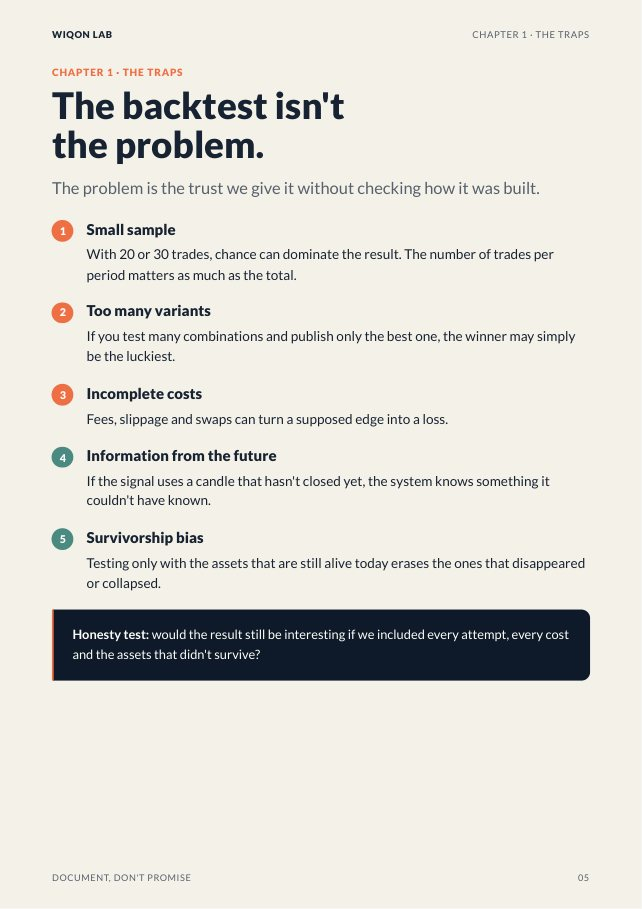
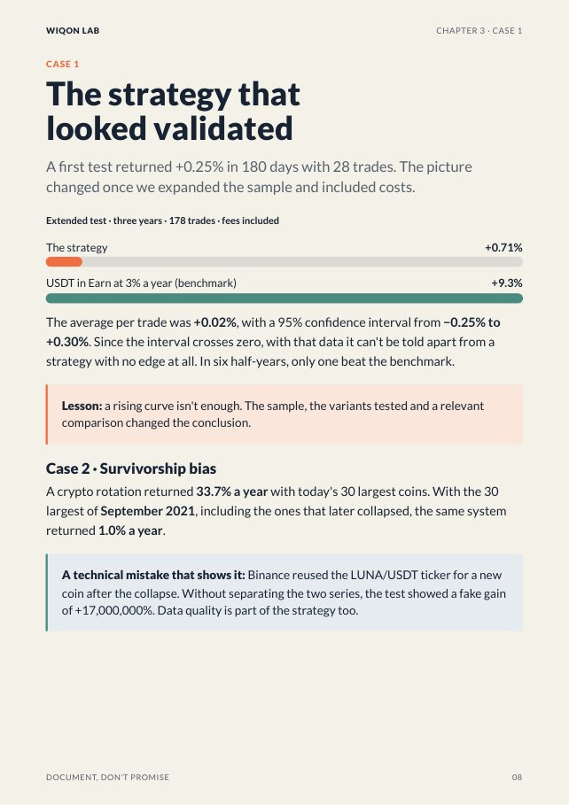
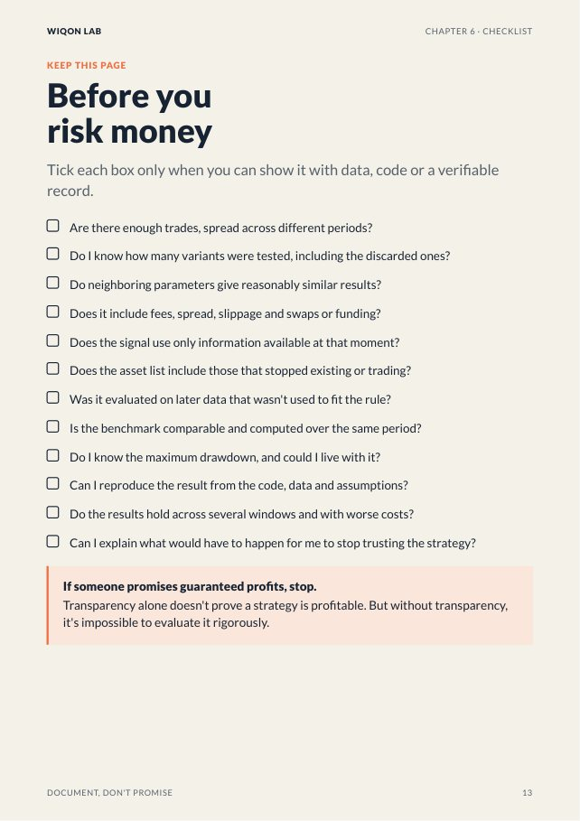

We tested more than 20 trading ideas with real data and real costs. Only one survived. This book gives you the questions that separate a real edge from a lucky streak, so you can evaluate any strategy, bot or signal before putting your money in.
What's inside
- The 5 traps that make a backtest look too good
- The 7 questions to ask any strategy or trading bot
- 5 real cases from the lab, with their numbers: the strategy that was luck, survivorship bias, the cost of swaps
- A 7-step protocol to audit before you risk
- A printable checklist and a traffic light to decide
16 pages · PDF · October 2026 edition · Avelino González, Eng.
Take a look inside


